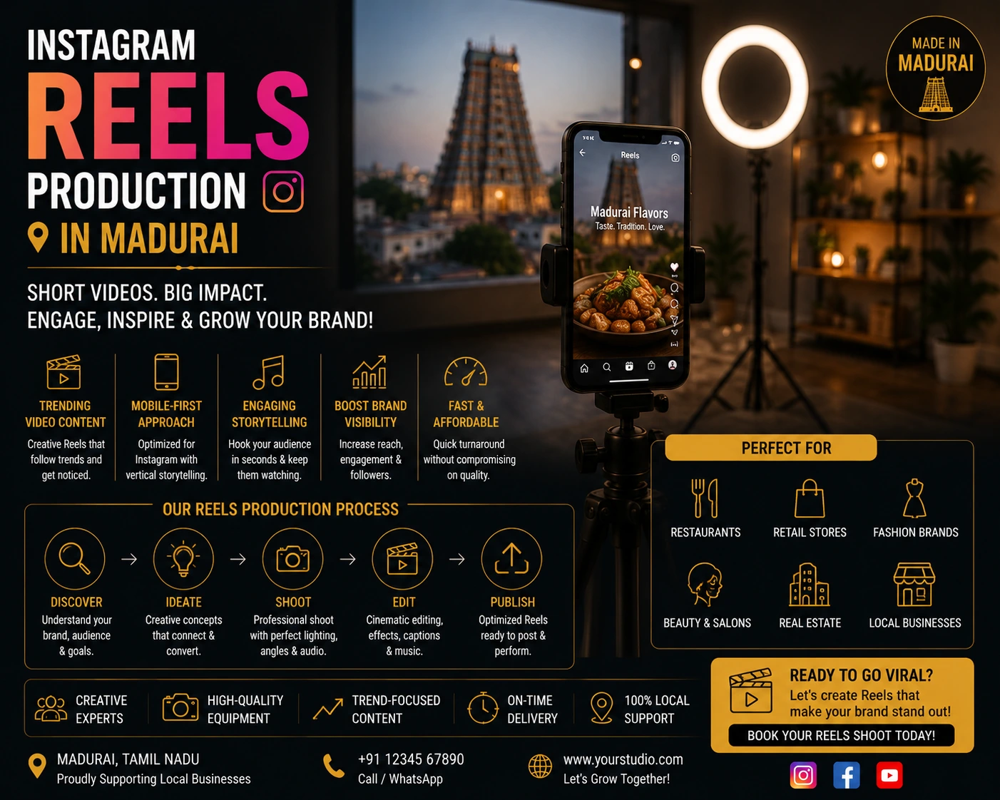
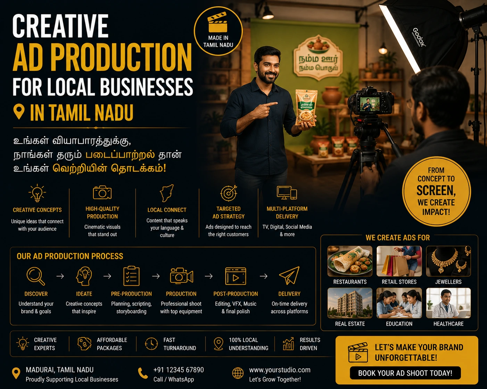

Professional Social Media Content Creation for Madurai Businesses
Why Madurai Businesses Can No Longer Afford to Wing Their Social Media
In 2026, every Madurai business with a phone has a social media presence. The restaurant on Bypas Road posts food photos. The saree shop on Nethaji Road uploads product images. The architecture firm in Anna Nagar shares project photographs. And almost all of them are posting content that looks exactly like what it is: content produced by a business owner with a smartphone and twenty minutes between customers.
The problem is not the posting — it is the result. Self-produced mobile content generates modest reach within an existing follower base, minimal engagement from new audiences, and almost no conversion from social media to actual enquiry or sale. Meanwhile, the Madurai businesses that are growing their customer base through social media — the ones whose Reels reach thousands of people in Madurai and across Tamil Nadu who have never heard of them before — are the ones working with professional social media content creation services that understand both production quality and platform strategy.
The difference between these two groups of businesses is not budget — it is infrastructure. And for a growing number of Madurai businesses, professional Instagram Reels production Madurai, digital ad video production, and short-form video marketing are the infrastructure investments that are changing the commercial trajectory of their brands.
What Professional Social Media Content Creation Services Include
Social media content creation services at a professional level go far beyond producing visually attractive posts. For a Madurai business investing in professional content creation, the complete service pipeline covers every stage from strategy to delivery:
Content Strategy and Calendar
A monthly content calendar built around the business's commercial objectives — product launches, seasonal promotions, local events — with confirmed content types, posting frequency, and platform distribution for each piece.
Video Production
Professional filming of Instagram Reels, YouTube Shorts, and ad video content — with stable footage, professional lighting, clear audio, and direction that produces natural, confident on-camera presence from the business owner or team.
Post-Production and Editing
Colour grading, music, text overlays, transitions, subtitles, and platform-specific formatting — the editing that transforms raw footage into polished, scroll-stopping content ready for direct platform upload.
Caption and Hashtag Strategy
Platform-optimised captions written with keyword language for discoverability, calls to action aligned with the business objective, and hashtag sets that function as topic signals for the Instagram and YouTube algorithms.

Instagram Reels Production Madurai: The Highest-Reach Format for Local Business
Of all the content formats available to Madurai businesses on social media in 2026, Instagram Reels production Madurai delivers the highest organic reach per post — significantly outperforming static images, carousels, and Stories for reaching new audiences beyond existing followers. A Reel from a Madurai business that hooks a viewer in the first three seconds can reach thousands of people in Madurai, across Tamil Nadu, and across India who have never engaged with the business before.
What professional Instagram Reels production Madurai delivers that self-produced mobile Reels cannot:
- A strong hook in the first three seconds. The Instagram algorithm distributes Reels based on completion rate — the percentage of viewers who watch from start to finish. A professionally scripted and produced hook that stops the scroll in the first three seconds is the single most important factor in Reel performance. This requires scriptwriting, creative direction, and production experience that goes beyond pointing a phone at the subject and pressing record.
- Clear, professional audio. Poor audio quality is the most common reason viewers abandon a Reel within the first five seconds. Professional production uses directional microphones, controlled audio environments, and post-production audio treatment to ensure every word is clear — even when the video is watched without earphones in a busy environment.
- Visual quality that signals brand credibility. A Reel with professional colour grading, stable footage, and intentional composition does not just look better — it communicates brand credibility in the first frame. For Madurai businesses selling to customers who cannot visit the business in person, this visual credibility signal is the foundation of the trust that drives enquiry and purchase.
- Platform-native format and pacing. Reels that perform best on Instagram are produced with Instagram's specific consumption pattern in mind — fast-paced editing that matches how Tamil audiences consume short-form video, text overlays that communicate the key message even when watched on mute, and a clear call to action that directs the viewer to the business's profile, website, or WhatsApp.
Digital Ad Video Production: Paid Reach for Madurai Businesses
Organic social media content reaches existing audiences and new audiences through the algorithm. Digital ad video production reaches precisely targeted audiences through paid distribution — and for Madurai businesses running Meta Ads or Google Video campaigns, the quality of the video creative is the single most important determinant of campaign performance.
A poorly produced ad video — shaky footage, low-quality audio, no clear visual hook — wastes every rupee of ad spend because it fails to hold the viewer's attention past the first three seconds, which is the threshold at which platforms charge for a video view. A professionally produced ad video holds attention, communicates the brand message clearly, and converts viewer attention into the action the campaign is optimised for — a website visit, a WhatsApp enquiry, a product purchase, or a store visit.
The types of digital ad video production most relevant to Madurai businesses:
Meta Ads (Instagram and Facebook)
- 15 to 30 second vertical video for Stories and Reels placement
- Hook in the first three seconds before the skip option appears
- Clear visual message communicable without audio
- Single call to action aligned with campaign objective
YouTube Ads
- Non-skippable 15 to 20 second bumper ads for awareness
- Skippable 30 to 60 second ads with brand message before skip point
- YouTube Shorts ads for short-form placement
- Delivered in 16:9 horizontal and 9:16 vertical formats
WhatsApp and Google Display
- Short product videos for WhatsApp Business catalogue
- Google Display video ads for website retargeting
- Animated static alternatives for display placements
- All formats delivered platform-ready without additional processing
Short-Form Video Marketing: The Content Calendar That Drives Growth
Short-form video marketing for Madurai businesses works through consistency and variety — a content calendar that delivers different video content types across the week, serving different commercial objectives simultaneously. The most effective short-form video marketing calendars for local Tamil Nadu businesses combine:
- Product or service showcase videos. Direct demonstrations of what the business offers — the saree being draped, the dish being prepared, the service being delivered — that communicate product quality and business capability to a viewer who has never visited. These are the videos that convert viewers into enquiries most directly.
- Behind-the-scenes and process content. Content that shows how the business works — the kitchen, the workshop, the production floor, the team at work — that builds the familiarity and trust that makes a local audience feel they know the business before they visit. This is the content that converts followers into loyal, repeat customers.
- Customer testimonial and review videos. Real customers sharing their experience in a format that is more credible and more persuasive than text reviews — especially for service businesses where trust is the primary purchase barrier.
- Trend-responsive content. Reels that respond to currently trending audio tracks, seasonal Tamil cultural moments, or local events — content that earns algorithmic amplification by participating in conversations the audience is already engaged with.
- Educational and value-add content. Videos that answer questions the business's target audience is actively searching for — content that positions the business as an authority in its category and earns organic discovery through Instagram and YouTube search.

Promotional Video Makers: What to Look for in Madurai
For Madurai businesses evaluating promotional video makers locally, the evaluation framework is the same as for any creative production partner — but with specific factors that are particularly relevant for local business video content:
- Portfolio of local business content, not just corporate or wedding work. Promotional video makers whose portfolio is built on wedding films and corporate event coverage have a fundamentally different production approach from those who specialise in social media content for business growth. Ask to see Instagram Reels and short-form ad video examples specifically — from businesses similar to yours in category and scale.
- Understanding of Tamil audience and cultural context. The most effective creative ads for local business in Madurai are built around local cultural references, seasonal Tamil events, and the specific aesthetic preferences of a Tamil Nadu audience. A production partner who understands this context produces content that resonates more deeply than generic video content produced without local cultural intelligence.
- Full production pipeline in a single team. Scripting, filming, editing, colour grading, music, subtitles, and platform formatting — all handled by the same team that briefed the business on the creative concept. Fragmented production across multiple vendors introduces quality inconsistency and communication overhead that grows with every additional production.
- Turnaround time matched to content calendar needs. Social media content creation operates on a weekly or monthly content calendar. A business content creator near me who takes three weeks to deliver a 60-second Reel cannot support a consistent posting schedule. Confirm turnaround times for different content types before committing to a production relationship.
- Platform-native delivery. Every piece of content delivered should be formatted, sized, and captioned for direct upload to its specific platform — vertical 9:16 for Reels and Stories, horizontal 16:9 for YouTube, square 1:1 for feed posts — without requiring additional reformatting by the business.
Creative Ads for Local Business: The Madurai Advantage
Creative ads for local business in Madurai have a specific advantage that national brand advertising cannot replicate: local recognition. When a Madurai audience sees a brand whose content references Meenakshi Amman Temple, the Madurai Jasmine, the local food culture, or recognisable landmarks and streets — the recognition signal creates an immediate emotional connection that a national brand's generic creative cannot achieve.
The most effective creative ads for local business in Tamil Nadu use this local recognition deliberately — not as decoration, but as a trust signal. A Madurai jewellery brand that shoots a promotional video at a recognisable local heritage location is telling its audience: we are from here, we understand your culture, we are part of your community. This is a message that resonates with a local Tamil audience far more powerfully than the polished, location-agnostic creative of a national campaign.
For Madurai businesses building a loyal local customer base while simultaneously expanding their reach across Tamil Nadu, this combination — local cultural intelligence in the creative and professional production quality in the execution — is the formula for social media content that both converts existing community members and earns the trust of new audiences discovering the brand for the first time.
Business Content Creator Near Me: Building a Standing Production Relationship
The most consistent social media growth for Madurai businesses comes not from a single well-produced video but from a standing production relationship with a business content creator near me — a local partner who knows the brand, understands the audience, has a pre-established creative framework, and can produce platform-ready content consistently across a monthly content calendar without requiring a full brief-and-approval cycle for every piece.
The advantages of a standing production relationship over one-off productions:
- Faster turnaround. A partner who already knows the brand's visual identity, tone, and content preferences produces new content faster — because the briefing, styling, and creative direction decisions are largely already made.
- Visual consistency across the content calendar. Consistent colour grading, consistent on-screen typography, consistent audio treatment — the visual coherence across a month of content that builds brand recognition in the audience's feed.
- Responsive to business events. A standing production partner can activate quickly for a product launch, a sale announcement, or a trending moment — because the production infrastructure is already in place and the brand context is already understood.
- Lower effective cost per piece. A monthly retainer with a business content creator near me typically delivers a lower cost per video than commissioning individual productions, because the fixed costs of briefing, location, equipment setup, and brand familiarisation are amortised across the full month's content volume.
Conclusion
The gap between Madurai businesses whose social media is growing their customer base and those whose social media is simply documenting their business is, in almost every case, a production quality and strategy gap. Professional social media content creation services, specialist Instagram Reels production Madurai, platform-optimised digital ad video production, and consistent short-form video marketing are not large-brand luxuries — they are the production infrastructure that local Madurai businesses need to compete for attention in the feeds of their own city.
The Madurai businesses investing in professional content creation now are building audience relationships, brand recognition, and customer trust that compounds with every piece of content published. The ones continuing to produce mobile content alone are building a content archive that the algorithm is largely ignoring.
At The PhD Ads, we provide professional social media content creation services for Madurai businesses — from Instagram Reels production Madurai and digital ad video production to monthly content calendars and creative ads for local business built for Tamil audiences, delivered platform-ready across every channel where your customers live.
Key Topics
Ready to Grow Your Madurai Business Through Professional Social Media Content?
At The PhD Ads, we specialise in professional social media content creation for Madurai businesses — Instagram Reels production, digital ad video production, short-form video marketing, and creative ads built for Tamil audiences, delivered on a consistent monthly content calendar.
Email: team@e2o.in